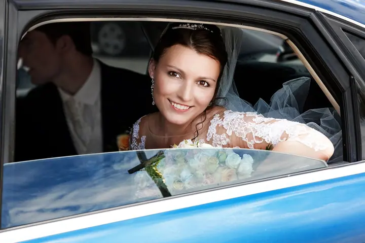
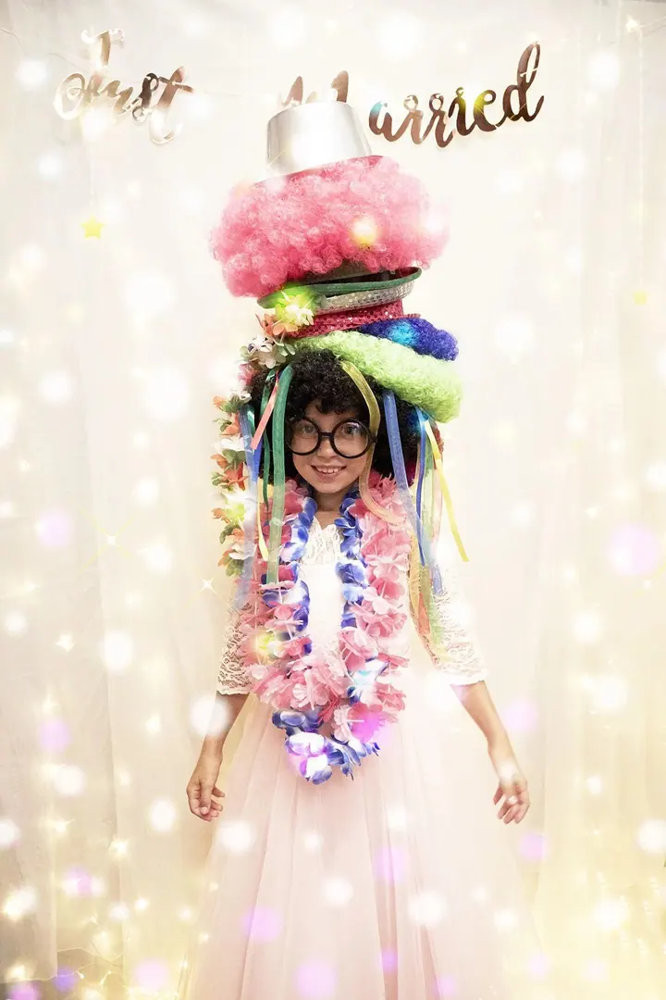
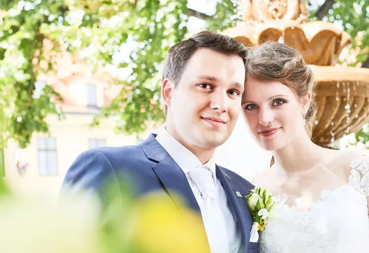
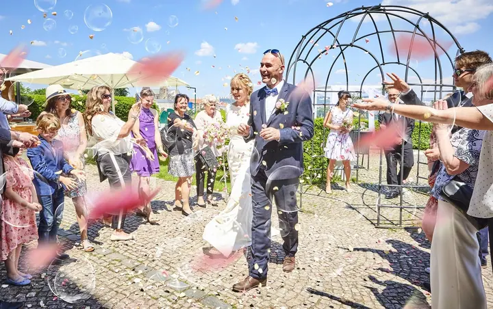

01 / 04
Svatební fotografie
Fotím svatby od 4 do 15 hodin podle zvoleného balíčku, uvolněně a bez zbytečných póz. Na přání přidám i polaroidy nebo Instax Wide, které si hosté odnesou hned.
Zeptat se na termín→



Svatební den bez zbytečných póz
Zeptat se na termín →(01) Ahoj
Jmenuji se Petr Pechman a jsem profesionální fotograf z Prahy. Fotím svatby a kromě nich také reklamu, produkty a architekturu . Na svatbě mi jde hlavně o to, abyste byli sví, uvolnění a celý den si užili.
(02) Co fotím
01 / 04
Fotím svatby od 4 do 15 hodin podle zvoleného balíčku, uvolněně a bez zbytečných póz. Na přání přidám i polaroidy nebo Instax Wide, které si hosté odnesou hned.
Zeptat se na termín→02 / 04
Fotím předměty, jídlo a produkty pro e‑shopy, katalogy i reklamu. Čisté světlo a pečlivá práce s detailem.
Zeptat se na termín→03 / 04
Reklamní fotografii se věnuji dlouhodobě a mé snímky se objevily i v Lürzer's Archive 200 Best Ad Photographers Worldwide. Fotím kampaně, portréty i auta.
Zeptat se na termín→Dále nabízím
Fotím architekturu, interiéry a nemovitosti tak, aby prostor působil vzdušně a přirozeně.
↗(04) Postup
Od první zprávy po hotovou galerii.
Krok 1 z 4
Potkáme se osobně nebo přes Skype či FaceTime. Probereme, jak si svůj den představujete, a já vás ujistím, že se ničím nemusíte trápit.
Krok 2 z 4
Vyberete si z balíčků od 4 do 15 hodin focení. Všechny parametry je možné kombinovat a upravit podle vašich přání.
Krok 3 z 4
Fotím uvolněně a bez zbytečných póz, abyste si užili každou minutu. Podle balíčku přidám i polaroidy nebo Instax Wide.
Krok 4 z 4
Fotky pečlivě upravím a pošlu přes Úschovnu nebo WeTransfer, u vyšších balíčků i s online galerií a tiskem. Podle balíčku je máte do 7 až 15 dnů.
Buďte sví a uvolnění, o fotky se postarám já.
(05) Za objektivem
Fotografii jsem vystudoval a pořád mě baví. Vždy se snažím o nejlepší možný výsledek, a i když to o sobě asi napíše každý, mé fotky získaly mezinárodní ocenění, například OneEyeLand, Selected nebo Lürzer's Archive 200 Best Ad Photographers Worldwide. Jsem také členem Asociace profesionálních fotografů.
Svatbu fotím převážně reportážně. Nemusíte se trápit tím, jestli se dobře tváříte do objektivu nebo jak vám drží účes. Při naší schůzce vás ujistím, že se ničím trápit nemusíte. Fotky upravuji s citem, aby zůstaly přirozené a emotivní. Žehlení pleti a formování postav k mé práci nepatří.
Jsem fotograf, ale především člověk, milující manžel a táta. Miluju cestování, film, jídlo, vaření, hudbu a slunce. Rád se směju a povídám si s lidmi, a to je na svatbě k nezaplacení.
Petr
Petr Pechman · Svatební a reklamní fotograf
Levný balíček s až 4 hodinami focení a zhruba 200 fotkami stojí 12 000 Kč, základní s až 8 hodinami 18 000 Kč a nejpopulárnější s až 12 hodinami 20 000 Kč. Individuální VIP balíček začíná na 25 000 Kč.
Podle zvoleného balíčku do 15, do 10 nebo do 7 dnů od svatby.
Ano. V ceně balíčků je doprava do 100, 200 nebo 400 km včetně cesty zpět, ve VIP balíčku je doprava po celé ČR zdarma. Svatbu v zahraničí domluvíme za výhodných podmínek.
Jsou to jedinečné fyzické fotky, které jsou hotové ihned a každá je originál. Hosté se u nich skvěle baví, a proto si je zákazníci velmi často žádají. Jsou součástí základního a vyšších balíčků.
(07) Kontakt
Napište pár vět o tom, co si představujete, a termín, který se vám hodí.